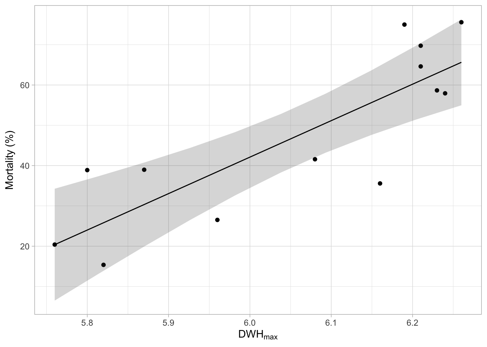
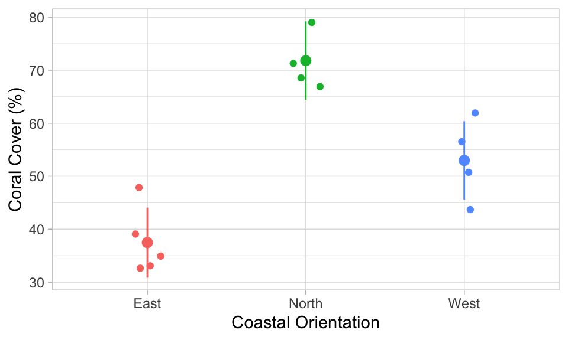

ggplot(data = ____, aes(x = ____, y = ____)) +
geom_point() +
labs(
x = expression(DWH[max]),
y = expression(Mortality ~ "(%)")
) +
theme_light()Indications pour TP 03
Tâche 1
Le cadre de données dat_change_coral contient la mortalité des coraux due à l’événement de blanchiment à chaque site sur la carte ci-dessus, avec le stress thermique cumulé maximum correspondant. Tracez la colonne max_ahs (c’est-à-dire l’intensité maximale du stress thermique cumulé) sur l’axe des x, et perc_mort (c’est-à-dire la mortalité des coraux en pourcentage) sur l’axe des y, et dessinez un nuage de points. Souvenez-vous du TP 02, vous devriez être en mesure de compléter cette tâche.
AstuceAfficher l’indice
Vous voulez tracer le cadre de données dat_change_coral, utilisez-le en conséquence dans ggplot(data = ). Dans aes(), vous voulez tracer max_ahs sur l’axe des x et perc_mort sur l’axe des y.
Tâche 2
\[ \begin{align} \mathrm{Mortality}_i \sim \mathrm{Normal(\mu}_i,~\mathrm{\sigma)} \\ \mu_i = a + b \cdot \mathrm{heatstress}_i \end{align} \]
, où \(\mathrm{Mortality}_i\) est la mortalité des coraux au site \(i\) (perc_mort), et \(\mathrm{heatstress}_i\) le stress thermique cumulé maximum à ce site (max_ahs).
Traduisez ce modèle dans la fonction lm() de R et comme toujours, remplacez les ____. Gardez à l’esprit que vous voulez étudier comment la mortalité des coraux (perc_mort) est affectée par le stress thermique cumulé maximum (max_ahs).
m_cor_mort <- lm(____ ~ ____, data = dat_change_coral)
AstuceAfficher l’indice
Quelle est la variable explicative ? Quelle est la variable réponse ? Rappelez-vous que dans le modèle, vous voulez comprendre comment perc_mort est affectée par max_ahs. Rappelez-vous aussi que lm() fonctionne comme suit : 1. Vous donnez la variable réponse 2. Vous ajoutez un ~ 3. Vous donnez la(les) variable(s) explicative(s)
Tâche 3
summary(m_cor_mort)
Call:
lm(formula = perc_mort ~ max_ahs, data = dat_change_coral)
Residuals:
Min 1Q Median 3Q Max
-21.0078 -7.7686 0.0181 8.6377 15.6975
Coefficients:
Estimate Std. Error t value Pr(>|t|)
(Intercept) -500.83 108.60 -4.612 0.000751 ***
max_ahs 90.49 17.91 5.052 0.000371 ***
---
Signif. codes: 0 '***' 0.001 '**' 0.01 '*' 0.05 '.' 0.1 ' ' 1
Residual standard error: 11.81 on 11 degrees of freedom
Multiple R-squared: 0.6988, Adjusted R-squared: 0.6715
F-statistic: 25.53 on 1 and 11 DF, p-value: 0.0003707Qu’est-ce que cela vous dit ?
Pensez à l’équation linéaire pour l’association entre le stress thermique et la mortalité des coraux. Quel est l’augmentation attendue (ou la diminution ?) de la mortalité pour chaque augmentation d’une unité de max_ahs ? Quelle est la valeur de \(R^2\) ? La relation entre le stress thermique et la mortalité est-elle statistiquement significative ou non ?
AstuceAfficher l’indice
La pente (l’Estimate pour max_ahs) est-elle positive ou négative ?
Pour une publication scientifique, vous pourriez décrire les résultats comme suit :
L’intensité du stress thermique, mesurée comme le stress thermique cumulé maximum en 2019 (AHSmax), a significativement impacté la mortalité des coraux (t(11) = 5.052, p < .001, adj. R2 = 0.67). La mortalité attendue a augmenté de 90.5% ± 18.0% (SE) par unité de \(\mathrm{ahs_{max}}\).
Tâche 4

Regardez chaque ligne de code que j’ai utilisée pour ce tracé :
ggplot(data = dat_change_coral, aes(x = max_ahs, y = perc_mort)) +
geom_point() +
labs(
x = expression(DWH[max]),
y = expression(Mortality ~ "(%)")
) +
geom_ribbon(
data = pred_cor_mort,
aes(ymin = CI_low, ymax = CI_high, x = max_ahs, y = NULL),
alpha = 0.2,
color = NA
) +
geom_line(data = pred_cor_mort, aes(x = max_ahs, y = Predicted)) +
theme_light()Regardez chaque ligne de code que j’ai utilisée pour ce tracé.
- Comprenez-vous comment cela fonctionne ? Qu’est-ce que vous pensez qui est tracé en premier, les points (données brutes), la ligne de régression, ou la zone grise ?
- Avez-vous une idée de pourquoi la zone grise a cette forme de « nœud papillon » ?
AstuceAfficher l’indice
- Dans
ggplot, les couches sont dessinées telles qu’elles apparaissent dans le code. Ici, les données brutes (geom_point()) sont tracées en bas, au-dessus vient la bande d’incertitude (geom_ribbon()), et sur le dessus, la ligne de régression (geom_line). - Le modèle est plus confiant pour prédire la mortalité des coraux quand il a plus de données de stress thermique, comme pour les valeurs moyennes de stress thermique. Vers les deux extrémités du tracé, il y a moins de données, donc le modèle est moins confiant et la bande d’incertitude est plus large.
Tâche 5
Il semble que la couverture des coraux dépend de l’orientation côtière ! Faisons une ANOVA pour tester cela. Nous voulons tester l’impact de coast sur percent_cover :
m_cor_cover <- lm(____ ~ ____, data = dat_coral_cover)
AstuceAfficher l’indice
Regardez mon indice pour la Tâche 2. Dans ce cas, quelle est la variable réponse, quelle est la variable explicative ?
Tâche 6

Avez-vous une idée de ce qui pourrait expliquer ces différences biologiquement ? Considérez que les récifs de Moorea ont été complètement détruits en 2010 en raison d’une épidémie d’étoiles de mer couronne d’épines, un prédateur de coraux, suivie d’un cyclone en 2010. La récupération ensuite jusqu’en 2019 était très rapide comparée à d’autres récifs. Nous savons également que le cyclone a frappé le Nord et l’Ouest plus fort que l’Est de Moorea. Pourquoi cela aurait pu être un avantage pour la récupération à ces sites ?
Quels autres facteurs auraient pu impacter la récupération après 2010 ?
AstuceAfficher l’indice
Il se pourrait que la récupération ait été plus rapide au Nord et à l’Ouest qu’à l’Est parce que le cyclone a nettoyé le substrat et a créé de l’espace pour les nouveaux recrutement. Au récif externe de Moorea, nous avons actuellement le problème qu’il y a beaucoup de squelettes coralliens morts restants après l’événement de blanchiment de 2019 qui se brisent dans la houle. C’est un substrat très instable pour les nouvelles recrues de coraux et peut entraver la récupération. Aucun cyclone ne s’est produit après l’événement de blanchiment de 2019. Donc avant, la récupération plus rapide au Nord et à l’Ouest de Moorea aurait pu conduire à la couverture de coraux plus élevée observée à ces sites.
Mais bien sûr, d’autres facteurs ont aussi pu impacter le recrutement et la couverture des coraux, comme par exemple la sédimentation, l’apport de nutriments, la biomasse de poissons herbivores (les coraux sont en compétition avec les algues pour l’espace, les algues restent plus communes quand il y a moins de poissons herbivores).
Tâche 7
Comme toujours, d’abord visualiser les données. Produisez un nuage de points avec body_mass_g sur l’axe des x, flipper_length_mm sur l’axe des y, et colorez les points selon species. Écrivez votre propre code R ci-dessous :
AstuceAfficher l’indice
Voici la structure de base du tracé
ggplot(
data = ____,
aes(x = ____, y = ____, col = ____)
) +
geom_point() +
labs(x = "Body Mass (g)", y = "Flipper Length (mm)") +
theme_light()Rappelez-vous que : - Vous voulez tracer les données penguins
Vous voulez tracer
body_mass_gsur l’axe des xet
flipper_length_mmsur l’axe des yet utiliser
speciespour les couleurs (col =)
Tâche 8
Modèle
Maintenant, vous allez construire votre propre modèle. Utilisez la fonction lm() pour tester l’impact de body_mass_g et species sur flipper_length_mm. Ici, utilisez les effets additifs, ce qui signifie que les deux variables explicatives (body_mass_g et species) sont séparées par un +. Écrivez votre propre code R ci-dessous et donnez un nom raisonnable au modèle :
____ <- lm(____ ~ ____ + ____, data = ____)
AstuceAfficher l’indice
Le premier ____ est le nom du modèle. Choisissez ce nom comme vous le souhaitez. Quelle est la variable réponse ? Rappelez-vous que dans lm(), la variable réponse vient avant le ~. Quelles sont les deux variables explicatives ? Séparez-les par +. Vous voulez utiliser les données penguins.
Évaluer le modèle
Utilisez summary() et anova() pour comprendre ce que le modèle a estimé :
AstuceAfficher l’indice
summary(____)Utilisez le nom du modèle que vous avez défini ci-dessus pour ____.
anova(____)Utilisez le nom du modèle que vous avez défini ci-dessus pour ____.
Tracer le modèle
Maintenant, utilisez estimate_relation() et ggplot() pour tracer les données brutes et le résultat du modèle.
AstuceAfficher l’indice
Prédire les données
D’abord, prédisez les données basées sur le modèle, adaptez le code estimate_relation() que vous avez vu maintenant plusieurs fois pour le modèle que vous avez créé :
____ <- estimate_relation(____)Le premier ____ est le nom du cadre de données qui contiendra les données prédites. Choisissez-le comme vous le souhaitez. Utilisez le nom du modèle que vous avez défini ci-dessus pour le ____ dans estimate_relation().
Conseils :
Le premier
____est le nom du cadre de données que vous créez qui contiendra les valeurs prédites. Choisissez-le vous-même !Le deuxième
____est le nom du modèle que vous avez créé ci-dessus
Tracer les données
Voici la structure du code ggplot que vous pourriez utiliser.
1ggplot(data = ____, aes(x = ____, y = ____, col = ____)) +
geom_point() +
labs(x = "Body Mass (g)", y = "Flipper Length (mm)") +
geom_ribbon(
2 data = ___,
3 aes(ymin = CI_low, ymax = CI_high, y = NULL, col = NULL, fill = ____),
alpha = 0.2,
) +
4 geom_line(data = ___, aes(x = ___, y = ___)) +
theme_light()- 1
-
Prenez les données
penguins, tracezbody_mass_gsur l’axe des x etflipper_length_mmsur l’axe des y. Utilisezspeciespour la couleur (col =). - 2
- Ici, utilisez le nom du cadre de données que vous avez créé avec les valeurs prédites (étape précédente)
- 3
-
Un autre indice : Dans ggplot, quand vous remplissez une zone, vous devez utiliser
fill =, et pas la couleur (comme pour les points et les lignes). Utilisez aussispeciespour le remplissage. - 4
-
Tracez les lignes de régression. Utilisez à nouveau le cadre de données avec les données prédites. Tracez
body_mass_gsur l’axe des x etPredictedsur l’axe des y.
Bonus Tâche 9
Maintenant, construisez un nouveau modèle, mais cette fois, incluez les effets interactifs de body_mass_g et species en séparant les deux variables explicatives par un *. Ensuite, effectuez les mêmes étapes que dans la Tâche 8, c’est-à-dire évaluer le résultat du modèle et le tracer.
AstuceAfficher l’indice
Essentiellement, copiez-collez les étapes que vous avez utilisées dans la Tâche 8. Dans le modèle, remplacez simplement le + par un *. Faites attention à utiliser de nouveaux noms pour toutes les variables que vous créez ! Sinon, R pourrait utiliser les données de la tâche précédente.